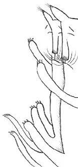

Dijo el gato: ¡Mau!
y la gata: ¡marramau!
puz, puz, puz,
ni gavau, ni gavuz,
polea, polau,
ñiriñau, ñiriñau,
¡ñau, ñau, ñau, ñau!
El gato de Antono Pintado
y la gata de tripera
el uno al otro se esperan
a la orilla de un tejado:
el gatillo enamorado
a su gata dice: ¡fuz!
cuarenta y puz
ni gavau, ni gavuz,
polea, polau,
ñiriñau, ñiriñau,
¡ñau, ñau, ñau, ñau!
Muy rabidoecha la gata
no pudo tener el envite,
una vez y otra repite
con ñarañau que la mata
y viendo que la maltrata,
a su gato dijo: ¡fuz!
ni gavau, ni gavuz,
polea, polau,
ñiriñau, ñiriñau,
¡ñau, ñau, ñau, ñau!
El señor gato jugando
con la señora gatilla
se acercaron a la orilla
y ambos cayeron rodando
y al caer los dos gritando
dijeron a voces ¡fuz!
ni gavau, ni gavuz,
polea, polau,
ñiriñau, ñiriñau,
¡ñau, ñau, ñau, ñau!